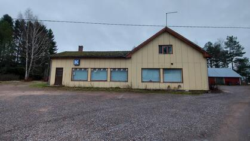
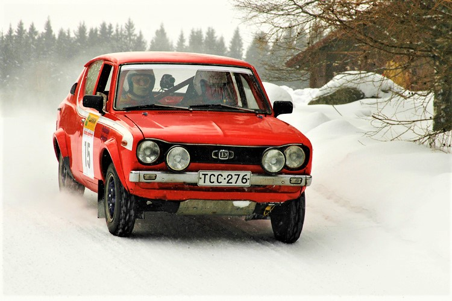
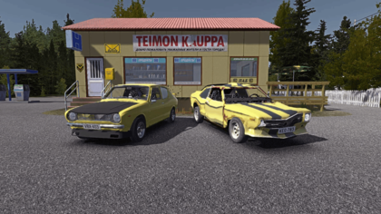

Ainda no Brasil, iremos para Guarulhos e partiremos de Avião para Krasnodar, na Rússia, iremos para Moscou de trem, onde visitaremos o mausoléu de Lênin, onde há o corpo de Vladmir Lênin, e também iremos observar várias coisas sobre a era Socialista e as estruturas da União Soviética.
Iremos de trem para Tartu e lá pegaremos um ônibus para ir a Helsinque, onde pegaremos outro ônibus para ir em direção a Säkylä, onde visitaremos a Loja Sepon Kauppa, pois é um lugar que serviu de inspiração para a criação da loja Teimon Kauppa, do jogo My Summer Car, que é um jogo muito divertido e que mostra como a cultura de um país pode ser espalhada pela internet, também tentariamos alugar um Datsun 100A, que foi o carro que serviu de inspiração para o mesmo jogo, para dar umas voltas pela cidade de Säkylä



Depois de terminarmos toda essa viagem épica, iremos ir de volta para o Brasil indo em direção à cidade de Pori, na Finlândia e pegando um voo em direção ao aeroporto internacional de Fortaleza.
Calculando o tempo total da viagem, ela teria uma duração de 3 a 4 dias